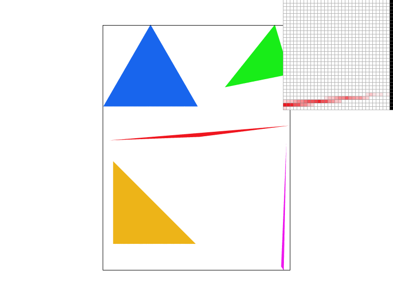
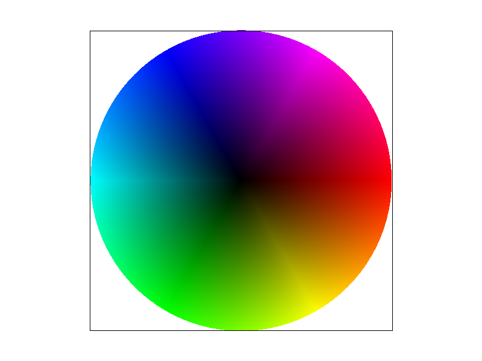

CS184/284A Spring 2025 Homework 1 Write-Up
Link to webpage: https://cal-cs184-student.github.io/hw-webpages-shashwatba/hw1/index.html
Link to GitHub repository: https://github.com/cal-cs184-student/sp25-hw1-shashwat
Overview
In this project, I wrote code which renders images from .svg files, primarily using triangle rasterization. I also implemented different sampling techniques and evaluated their drawbacks and benefits.
Task 1: Drawing Single-Color Triangles
For my basic implementation, I used the idea from lecture 2 of looping through the raster grid and checking each pixel’s midpoint, using a function called is_inside_triangle which returns true if the pixel needs to be colored and false if not. To ensure that the entire triangle is within the raster grid, I first computed min_x, min_y, max_x and max_y, which are the x and y edges of the triangle computed using the input vertices. If is_inside_triangle returns true, the rasterize_triangle function colors that pixel. To implement the actual is_inside_triangle function, I ran the line equation tests but was running into the issue of clockwise vertex orderings not returning “true”. To fix this, I used an idea from Discussion 2: flip any two vertices to change the winding order from clockwise to anti-clockwise in the case that (x1 - x0) * (y2 - y1) - (x2 - x1) * (y1 - y0) < 0, indicating a negative z-axis as per the right hand rule.
In cases where the triangle covers most of its bounding box (e.g., large triangles), the performance of this approach is comparable to the bounding box method since most pixels need to be processed. However, it is never worse because the overhead of additional checks is minimal compared to the savings in typical scenarios.

Task 1: Extra Credit (Optimizations)
| Test Number | Unoptimized Runtime (seconds) | Optimized Runtime (seconds) |
|---|---|---|
| test3.svg | 0.015 | 0.007 |
| test4.svg | 0.001 | 0 |
| test5.svg | 0.003 | 0 |
| test6.svg | 0.002 | 0 |
if (inside) {
if (!inside_found) {
start_x = x; // mark left edge as found, and where it is
inside_found = true;
}
end_x = x; // mark right edge as found (with the rightmost point so far)
}
else if (inside_found) { // This means I shouldn't be iterating anymore since I found the triangle elsewhere, so I can safely break.
break;
}
I repeat this for each row so that I don't keep iterating past the right edge, ever. Some minor adjustments I made were:
- Fill in the sample buffer all at once, after iterating through each row. This might be faster due to spatial locality in the cache, as opposed to sample buffer memory accesses being interspersed with computations.
- Check the winding number before sampling all the points, swapping vertices only once.
- Remove helper functions to eliminate unnecessary memory accesses.
- Add the 0.5 offset only at the start of the loops (twice) rather than within each iteration.
- Precompute variables like
x1 - x0intodiff_1,y2 - y1intodiff_5, etc., to reduce computations.
Task 2: Antialiasing by Supersampling
I supersampled triangles by changing my implementation in rasterize_triangle to sample at a higher rate, i.e. sample sample_rate times within each pixel. I kept track of these sampled subpixels inside the sample_buffer, which is now larger to account for width * height * sample_rate pixels. I did not call fill_pixel here, instead opting to directly modify the sample_buffer inside the quadruple for loops. For the lines and points, I modified the call to fill_pixel so that it knows how to correctly index into the sample_buffer and fill in entire pixels with the same line/point color, doing so by looping through the subpixels of the pixel in double for loops just like in rasterize_triangle. Lastly, when resolving to framebuffer, I averaged the subpixels of each pixel by looping through them and adding them to a color, then dividing by the sample_rate before putting the color in rgb_framebuffer_target.
Supersampling is useful because it allows for anti-aliasing the image, filtering out “jaggies” such as in the triangle corner seen below. By sampling at a higher frequency than the display has enough pixels for, then averaging those pixels, the overall effect is that the image is smoother and more realistic, since edges are blurred rather than being in staircase like patterns. The main part of the rasterization pipeline that was modified was the resolve_to_framebuffer() function, which needed to accommodate a sample_buffer size that is larger than the framebuffer size.
|
|

|
|
|
Task 2: Extra Credit (Jittered Sampling)
I implemented jittering by generating two random numbers between zero and one, then sampling the original image at that (x, y) coordinate within the subpixel (as opposed to at (0.5, 0.5) = the center). If you look closely, there are some slight gradient differences between the two images below.
|

|
|
Task 3: Transforms
I rotated the front half of cube man's left arm and his entire body so that it looks like he is swimming. He is either wearing a golden swimming cap or a scuba diving helmet. His right arm has been rotated to be in a downstroke, while his left is in an upstroke. His legs are elongated because he is wearing diving flippers.
Task 3: Extra Credit (Rotations)
I implemented a rotate counter-clockwise button ('K') and a rotate clockwise button ('J'), both of which rotate the image by 90 degrees. To do so, I first centered the image to the origin (top-left), multiplied by the rotation matrix, then un-centered it by multiplying it by the inverse of the centering matrix.
Task 4: Barycentric coordinates
Barycentric coordinates are a way to track points with reference to the sides of a polygon (in this class, specifically only to the sides of a triangle). For example, the image below displays a triangle with each of its vertices given a maximum R, G or B value respectively, and all other points in between are colored as per their barycentric coordinates. The higher the alpha value is, the farther the point is to the red vertex, and therefore is less red itself, and similarly for other colors. The sum of alpha, beta and gamma, the three barycentric coordinates, must always be one because the points lie within the triangle, and if any of alpha, beta or gamma are equal to one then we are at the respective vertex (maximum closeness). Also, gamma = 1 - alpha - beta, so we really only need two additional points to compute where our point is.|
|

|
Task 5: "Pixel sampling" for texture mapping
Pixel sampling is the process of sampling the texture in the uv-plane into the xy-plane, going through a non-linear map. Since the map is not linear, bilinear mapping requires a weighted average of the four closest points to the uv coordinate, depending on which part of the pixel the uv coordinate is closest to. In the rasterization function, I needed Barycentric coordinates to interpolate the uv coordinates for each pair of xy coordinates, doing so if the points were inside the triangle. Nearest sampling simply rounds the uv-coordinate to the nearest available integer values and samples it.
As seen below, bilinear sampling produces a smoother rendition of the image regardless of the sampling rate, with less distinct pixels in the streaks of the parrot. There might be a large difference between the two when the xy-plane is much larger than the uv-plane, in which case nearest neighbour will magnify the pixelation in the uv-plane further into the xy-plane, while bilinear will be relatively smooth. This is because 1 texel is mapping to more than 1 pixel, so sampling more than 1 texel as in the bilinear approach provides a more robust algorithm.

|

|

|

|
Task 6: "Level Sampling" with mipmaps for texture mapping
Level sampling refers to selecting the appropriate downsampled version of the original image (known as a mipmap) based on how much curvature, minimization or maximization the texture is going through.
To implement level sampling, I computed the differences (in barycentric coordinates) at each point from (x+1, y) and (x, y+1), allowing me to get the derivative terms. These terms keep track of how quickly the color is changing around any given point, and are necessary for the calculations as listed in the spec. While sampling the texture, I ensured that the point stays within the bounds of the mipmap, and then called the relevant function: sample_nearest() or sample_bilinear(). In the L_LINEAR case, I averaged two different calls to these functions, one at floor(level) and one at ceil(level).
I used my code from Task 1: Extra credit to see which combinations are fastest, and which are slow. Bilinear pixel interpolation sampling seems to be the fastest way to get a smooth image, mainly because it simply does some averaging operations and doesn't actually increase the number of samples needed. On the other hand, increasing the number of samples per pixel appears the slowest because of how many computations are needed per screen pixel (conversion to barycentric coordinates and constraint checking for each subpixel). Bilinear level interpolation is slower than bilinear pixel interpolation sampling but faster than supersampling 16 subpixels per pixel, since it doesn't require additional samples, but might require some additional mipmap computations such as blending to levels in the case of bilinear level interpolation.
In terms of memory, supersampling more times per pixel is bound to be the most memory intensive, especially since it uses a larger sample_buffer and then averages it out. This is followed by level sampling, which stores mipmap level information and the texture sample -> screen rasterization, and then finally by pixel sampling which only needs to store the texture sample and rasterization buffer. In terms of quality, supersampling does a great job at producing a good antialias, but the other two methods produce a smooth version of the image that may be more appropriate for certain types of content.

|

|

|

|